De: La Frikipedia, la enciclopedia extremadamente seria.
De: La Frikipedia, la enciclopedia extremadamente seria. De: La Frikipedia, la enciclopedia extremadamente seria.
| De la serie anime para todos: | |||
| Ranma ½ | |||
| |||
| Género: | | ||
| Episodios: | 161 | ||
| Autor del manga: | Rumiko Takahashi | ||
| Publicación: | Por ahí | ||
| Publicado en: | una revista... | ||
| Director del anime: | Alguien que Takahashi contrató | ||
| Transmitido en: | un canal de TV | ||
| Ovas: | 13 | ||
| Películas: | 2 | ||
| Notas | El padre de Ranma actuó en Kung Fu Panda | ||
Ranma ½ es un plagio de La princesa caballero un manga y un anime de Rumiko Takahashi (la misma loca de Inuyasha y Urusei Yatsura) que trata de un joven que descubre las delicias del travestismo para escaparse de un matrimonio obligado.
Ranma, desde que nació su vida fue predestinada para ser un mujeriego maestro en artes marciales en categoría libre impuesto por su padre Genma Saótome, este, tratando de ser un buen padre (que en si no era eso lo que quería...), tenía planeado irse de la casa junto con Ranma cuando era un mocoso, según, por la razón de educarlo e instruirlo en un súper entrenamiento del cual solo de esa manera podía llegar a ser alguien en la vida, pero en realidad era porque no tenía nada mejor que hacer, quería un vida de vagancia, dinero fácil y porque encontró a Nodoka Saótome, su mujer, tocándose con Happosai.
Por irresponsabilidad de su padre, (que este gilipollas ya no podía ni pagar ni un sushi), hacía vivir a Ranma a base de deudas que Ranma tenía que pagar cuando fuera grande, de robar y de venderse como prostitutas en los pueblos a los que llegaban. De pronto Genma recordó a su amigo de la vida Soun Tendo y que le había hecho el juramento que cuando Ranma fuera mayor se lo iba a ofrecer a él y a sus hijas, así que fue a molestar al dojo. Y ahí es donde comienzan todos los problemas.
Cuando Ranma tiene 16 años, finalmente llega al Dojo por su padre, pero extrañamente se convierte en chica y así se presenta frente a los Tendo, (todos se desilusionaron porque Ranma siendo chica no podía follar..., Akane no pensaba precisamente eso...), Soun Tendo pretendía que Ranma se hiciera cargo del Dojo y que hiciera feliz (se omite el tipo de felicidad) a una de sus hijas (más bien quería que todas, pero eso no apareció en el anime).
Ranma al ver a Akane Tendo, comenzó a insultarla lo fea y masculina que se veía, pero Soun Tendo la escoge como su prostituta personal prometida por tener la misma edad, ya que Nabiki era demasiado ambiciosa y lesbiana; La otra la quería para sirvienta (Kasumi), provocando en el futuro un amor sadomasoquista justificándose que entre ellos existe odio, pero a la vez a Akane Tendo le fascina esa idea de que él sea un transexual. Por su cabeza pasaban muchas fantasías por cumplir. Finalmente terminan haciendo el sexo, en todas las formas posibles pero más ligadas al sadomasoquismo.
Cuando Ranma va a la escuela de Akane esta demuestra sus dotes de masculinidad al derrotar a cada hombre que la deseaba (esta era un razón de porque Ranma dudaba de unirse con ella, y quien no?). Ahí aparece el niño rico acosador, Kuno Tatewaki, que por diferentes apuestas trata de obtener el culo amor de Akane Tendo.
Ranma trata de aprender técnicas (su padre es un inútil) y posiciones especiales, lo que hace que, al final, Ranma termine siendo todo un experto en sadomasoquismo. Además de Akane, Ranma también pagó por el sexo servicio de se comprometió con Shampoo, Ukyo y Kodachi, él niega el pagó con los intereses. (Muchos dicen que es un gay de closet, su transformación de mujer en este caso le es de gran utilidad).
Ranma es ½ porque a su padre se le ocurrió entrenar en los charcos de semen mágicos de Jusenkyo, como de costumbre los dos gilipollas hacen caso omiso al Guía Gay Turístico (este también se tardó en decirlo que se hace...) y al caer a los dos a los charcos obtienen una maldición provocada por la Allspark (estaba en los charcos). Ranma resbala al "Charco de la Prostituta ahogada en..."(sin detalles).
Los efectos de la maldición era que al tener contacto con agua fría se convierte en una chica que tenía muuucha personalidad, era muy deseada por todos y pelirroja, la cual, siempre estaba maquillada (como lo hace?) y con agua caliente se convierte en el mismo idiota, (en pocas palabras es un transexual que se hace rápido la operación de sexo mientras se baña).
Por esta razón es el porqué Ranma es tan popular, muchos al saber que tiene esta habilidad, (mas Akane Tendo), empiezan a tener profundas fantasías sexuales. XD.
| Personaje | Descripción | Se convierte en... |
|---|---|---|
| Ranma Saótome |
Un mocoso traumado por ser pobre e imbécil, que al final se da cuenta que lo único que sabe hacer es ser un Gay profesional. Es incapaz de declararle su amor a Akane, porque le encanta ser el más mujeriego (está dispuesto a defender ese título). Según con el pretexto de que es acosado por todos los que lo conocen. (Que de interesante tiene ese Gilipollas?). Es un mantenido bueno para nada que no hace nada más que causarle problemas a los Tendo (o igual hasta los divierte...) como su padre, Genma Saótome, (a eso se le puede llamar padre?), este trató de entrenarle en las artes marciales (o seria, maritales?) en categoría libre (no se confundan...). Una teoría afirma científicamente que la posible causa del repentino cambio de sexo es que esto solamente sea una reacción alérgica que agrande el busto y encoja los testículos, esto último pudiendo ser debido a la temperatura del agua, después de haber entrado en contacto con el charco con sustancias sospechosas provocando una reacción inevitable. Muchos dicen que son los desechos de la planta nuclear de Springfield. Tiene el complejo de Ganador, según él nunca pierde y es capaz de hacer TODO por no perder, cuando se menciona TODO es TODO. | En una chica pervertida que es capaz de lograr todo lo que quiere a cambio de lo que sea. Practica Homosexo con Akane y se la pasa seduciendo a cada hombre que encuentra. |
| 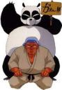 Genma Saótome |
Genma también se sumergió a una de las pozas con sustancias sospechosas de Jusenkyo, se convierte en panda al caerle agua fría, causa por la cual científicos de todo el mundo y ecologistas lo andan persiguiendo, con la esperanza de rescatar a los pandas de la extinción y también por ser un panda inteligente (si?). Padre de Ranma, fue amigo de de Soun Tendo, con el practicaba el Kamasutra. No obstante, Soun Tendo intenta no correr la voz de ello, sobre todo porque tener a un panda como jugador de juegos de mesa es un lujo que puede que algún día use a su favor para ganarse unas perras vendiéndolo a un circo. Nadie sabe de dónde carajos saca tanta tabla y plumones para escribir, (esta es otra causa del porque el Dojo de los Tendo está en bancarrota) | Se convierte en un panda súper gigante e inteligente por escribir a la velocidad de la luz para comunicarse. |
| Personaje | Descripción | Se convierte en... |
|---|---|---|
| 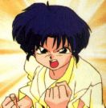 Akane |
Otra traumada con su aspecto masculino que a todos les llama la atención, es una chica perversa de 16 años que anda en busca de ser la mejor prostituta de Ranma, la mayoría de las veces no tiene nada mejor que hacer que buscarlo como perro para así sentirse alguien importante para él. Contantemente siempre se anda metiendo en problemas por él. Practica la Zoofilia todas las noches con el súper cerdo pervertido de P-Chan (Ryoga Hibiki) y su misión es llegar a tener un buen trió Zoofílico (furry hentai y homosexual) junto con Ranma. Descubre que su prometido es un gay y prefiere que sea una mujer porque es lesbiana. A pesar de siempre estar golpeando a Ranma con un látigo y lencería bondage discutiendo y peleando con Ranma, se preocupa mucho pero mucho por él, y logró olvidar visitar al ginecólogo para hacerse sus revisiones anuales. | Nada |
| 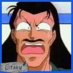 Soun |
Padre de Akane, Discípulo de Happosai junto con Genma, (De ahí la unida amistad), con el cual practicaba entrenamiento homosexual(aunque más bien era abuso) que sufrían, él. En su misión de deshacerse de su maestro lo embriagaron y lo ocultaron en una gran cueva de la cual salió ileso.
Cuando ellos también terminaron embriagados, querían casarse, pero no podían procrear hijos, así que se casaron con otras para que sus hijos pudieran hacer lo que ellos no hicieron. || Nada | |
| 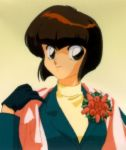 Nabiki |
Segunda hija de Soun Tendo, tiene 17 años y NO asiste a la escuela Furinkan, donde es compañera de clase de Tatewaki Kuno. Es muy astuta, pícara e inteligente. Su avaricia es una causa del porque Ranma se enoja con ella, pues siempre le anda tomando fotos sema-desnuda y las vende a todos chicos de la escuela. Sabe cómo salir bien parada en todas las malas situaciones. Su obsesión en esta vida es el dinero (maldita capitalista) Su pasatiempo favorito es molestar a la gente y sacarle dinero, no es prostituta porque es demasiado inteligente para no serlo, deberían de usarla para la administración de los bienes de los Tendo. | Nada |
| 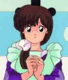 Kasumi |
Tiene |
Nada |
| Personaje | Descripción | Se convierte en... |
|---|---|---|
| 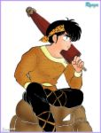 Ryoga Hibiki |
Un chico despistado con todo que carece completamente de sentido de la orientación, por lo que ya le van a comprar un GPS (siempre que no lo pierda, claro está) y que deja que abusen de él sin defenderse (solo de Ranma, porque no le cumplió como novio), es la mascota de Akane que no sabe que es Ryoga cuando no se baña con agua caliente, (no bañarse nos convierte en cerdos). Este también tiene el trauma de que no pude declararle el amor a Akane y por tener impotencia sexual. Practica sexo Zoofílico en la cama con Akane sin pagar, lo que a Ranma lo vuelve loco de curiosidad pero lo esconde con celos. Tener a Akane como amante y guardaespaldas es un lujo que sólo los muy cochinos se pueden permitir. Ryoga a pesar de todo llega a apoyar a Ranma en los momentos difíciles pero en realidad busca fortalecer su relación de novios Gays. También le encanta verle las Tetas a Ranma cuando se convierte en mujer. Ryoga también sufre una maldición de los Manantiales de semen Jusenkyo. | Se convierte en un apetitoso cerdo negro, ridículo y pervertido que goza de las oportunidades de dormir en la cama junto con Akane Tendo. Por culpa de Ranma, transformándose en un cerdo cachondo guardándole rencor, P-chan ("P" por "pig", "puerco" y el chan por "chancho") |
| 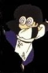 Mouse |
También es un despistado pero el porqué usa lentes (A Ryoga no se justifica...o si?). La más desconcertante duda sobre la maldición de Mousse es cómo pudo ahogarse un pato (...) Está enamorado perdidamente del Head and Shoulders, aunque este Shampoo nunca le funcionó. Está casi ciego por lo que siempre tiene que usar gafas con la misma graduación que una lente de telescopio, las que con frecuencia olvida ponerse, confundiendo cualquier cosa, como la bisabuela de Shampoo, Ranma, hasta objetos fálicos, con su Shampoo favorito. Además Mousse es tan inútil que no fue capaz de vencerla en un combate en lodo, de forma que como indican las leyes de tribu, no puede casarse con ella. Por su mala vista cayó en una fosa de Jusenkyo, Shampoo siempre se aprovecha de él (por tenerle tanto amor a los animales, mejor dicho, Zoofilia). Mousse trata de derrotar a Ranma creyendo que venciéndole se ganará un Head and Shoulders para por fin lavarse el cabello que lo tiene muy sucio y casposo. | Mousse (es un postre de chocolate que le cae pesado a Ranma cuando se lo come) Aun no se sabe como coños saca tantas cadenas y objetos extraños de sus alas, es patos más buscado por los magos por sus habilidades. |
| 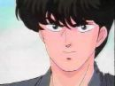 Kuno Tatewaki |
Con 17 años ya es dueño de una gran fortuna junto con su hermana Kodachi, producto de la mafia japonesa que exporta drogas hasta Hawái. Es un adicto al Hentai (Pervertido). Jamás logra decidir a quién quiere más: si a Akane o Ranma-chica, así que tiene una gran colección revistas de playboy donde aparecen ambas y hasta pósters en su habitación con alto contenido sexual, los que Nabiki le proporciona por una cantidad considerable de dinero, ya que Kuno no sabe bajar fotos de internet. Kuno (ama a Akane, y al afeminado transexual). Para los amigos es Kuno Cacahuete o simplemente Cacahuetin Maní corto. No importa cuántas veces Ranma lo derrote, siempre cree tener superioridad sobre él, ya que de hecho pertenece al partido neonazi. Tampoco importa cuántas veces Ranma se cambie de sexo delante él vil Autobot ya que es tan idiota que no parece comprender que Ranma y la chica pelirroja son la misma persona. En uno de los primeros episodios Nabiki trata de confundirlo más y le dice que la chica pelirroja "le pertenece a Ranma porque compró su alma"; Kuno creyó que era la prostituta personal novia de Ranma y que éste era un aprovechado, teniendo muchas chicas al mismo tiempo a mitad de precio, ya que a él cada vez que va a la casa Tendo, sólo le alcanza para pagar una. | Nada |
| 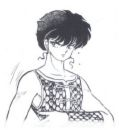 Pantimedias Tarou |
Mejor conocido como Playntex Taro, es el personaje más ridículo de la serie por realizar secuestros y daños en tercer grado a todos los lugares que visitaba con el objetivo de cambiar su nombre. Cuando era un bebé Happosai bañó, desvistió y vistió (en los charcos de sustancias extrañas) de Jusenkyo se convirtió en una bestia que da asco, mezcla de cosas raras (Algo así se pudo ahogar?). Su nombre se lo puso Happosai porque su madre no tenía la inteligencia para ponerle un nombre, este se inspiró en su prenda favorita que siempre usa el por las noches. | Es una bestia alada en in intento de ser un "Hombre de las nieves montado sobre un güey con una serpiente en una mano y una mierda en la otra", ridícula en forma de toro salvaje con un piercing demostrando su maldad. |
| 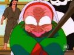 Cologne |
Aquí están El tío y la tía más feos que jamás se haya visto Cologne es la tía más fea que jamás se haya visto es la bisabuela de Head and Shoulders Shampoo. Viaja siempre masturbándose con el puto bastón haciendo equilibrio sobre un enorme bastón. Es una mujer, ¡por increíble que parezca!. Su gran poder es la estridente risa chillona capaz de dejar sordo a cualquier personaje tal y como hizo con Beethoven. Desea que Ranma sea su esclavo sexual yerno, porque como no sabe que existen las telenovelas ha decidido meter las narices en los cotilleos del barrio. Cuando era guapa (...no me pregunten hace cuanto...) fue violada por novia de Happosai. | Nada |
 Happosai |
Happosai es tan poderoso que se ha follado a Ranma varias veces. Es el segundo al mando de la secta de los pervertidos. Las poquísimas ocasiones en las cuales Ranma ha disfrutado han sido traumatizantes puesto que ha sido cuando él estaba transformado en mujer porque cuando más le gustaba es cuando era hombre. Happosai (el viejo morboso que se la pasa sodomizando a todos los de la serie). Dizque es el maestro sadomasoquista de Ranma, Genma y Soun. También se dice que fue el maestro de Naruto, cuando se apodaba Jiraya. Es todo un puto gilipolla santo y ama y se coge odia a los pervertidos que coleccionan ropa interior de mujer. | Aunque en esta serie nunca se muestra, se convierte en una pulga y se cambia el nombre a Myoga. |
| Personaje | Descripción | Se convierte en... |
|---|---|---|
 |
Este es el Shampoo para el cabello que usa Ranma y que lo deja sedoso y brillante además de ser anti caspa. Su nombre real es "Head and Shoulders" debido a su procedencia gondwanesa, se traduce al español como Shampoo. Debido a que también fue a trabajar de pija entrenar a las pozas de Jusenkyo se convierte en gata > (sirvienta ) al caerle agua fría. Es originaria de la tribu gondwanesa de Aaaachezuu (salud), una lejana región del este de Gondwana < donde sus habitantes se llaman joketsus y vive con su momia bisabuela zombie, Cologne. Shampoo es utilizada por Ranma como una esclava sexual jabón para el cabello que lo deja sedoso y brillante y es anti caspa. | Una gata pervertida que goza de serlo. |
| 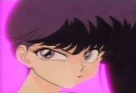 Kodachi Tatewaki |
Experta en danza para festivales Gays está locamente enamorada de Ranma (aunque realmente, está loca) y odia a Ranma cuando se opera y se pone implantes. Suele usar somníferos en cualquier comida que prepara para Ranma para secuestrarlo ayudarlo con sus problemas de insomnio. Al parecer comparte el "gran" ingenio de su hermano y tampoco parece entender que la pelirroja y Ranma son la misma persona. En varias ocasiones intenta deshacerse de la competencia (Akane, Shampoo, Ukyo) usando métodos un poco peligrosos, que aprendió gracias al best seller "Como conseguir el amor" por el célebre Hannibal Lecter. | Nada |
| 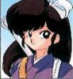 Ukyo Kuonji |
Ukyo era el mejor amigo de Ranma cuando eran unos mocosos, pero su gran atracción por él (o el GRAN motivo que tenía entre las piernas) le hizo operarse para ser una mujer y así poder gustarle. Por eso, cuando descubrió que Ranma era gay, se cogió un cabreo descomunal. Le estuvo persiguiendo hasta el culo del mundo., donde Ranma, para que dejase de intentar asesinarlo, le mintió sobre su verdadera orientación sexual. Desde entonces, Ukyo elaboró un nuevo plan de venganza: Hacerle creer que se había vuelto a enamorar de él para petarle el estómago a Okonomiyakis. | Nada |
| Personaje | Descripción | Se convierte en... |
|---|---|---|
| 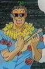 Director de Furinkan |
Padre de Kodachi y de Tatewaki. Después de desaparecer por tres años, porque estaba en Hawái atendiendo a la internacional mafia Japonesa, vuelve a la escuela, y trata de imponer un corte de pelo y normas absurdas bien fundamentadas que a nadie le gustan, que a su vez le fueron enseñadas a él por los mismísimos gringos >. Vive obsesionado con rasurar el vello púbico a Ranma, y va por la vida con tijeras, afeitadoras y demás, aprovechando todas las oportunidades que tiene para imponer un corte adecuado para un skinhead en la escuela. | Nada |
| Dr. Tofu |
O también conocido como el Dr. Soya, es el ginecólogo personal de la familia Tendo; también un excelente quiropráctico, que frecuentemente se encarga de las heridas sexuales de Ranma y Akane. Es muy buen doctor, excepto cuando Kasumi va a hacerse una revisión: al verla pierde la razón completamente, por lo que se equivoca de agujero y lastima a quien sea que esté examinando, en general Ranma en su forma femenina(Le gusta darle anestesia a Kasumi y violarla) . | Nada |
| 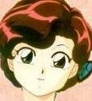 Nodoka Saótome |
Madre de Ranma, fue separada de su hijo cuando era un mocoso. Después de 10 años, se encuentra con Ranma y Genma en la casa de los Tendo pero no los reconoce, porque descubre que su hijo es gay. Estos se ocultan de ella por una promesa de Genma para meterle la Katana a Ranma en el culo si no llegase a ser un hombre de bien. (Que buena decisión de ocultarse...XD). | Nada |
La manga es como un comic y el anime es como una serie de dibujos animados
Autor(es):